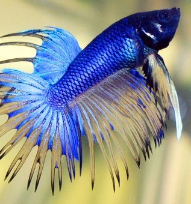
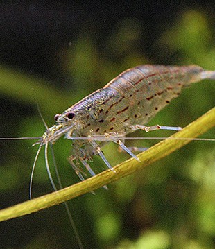
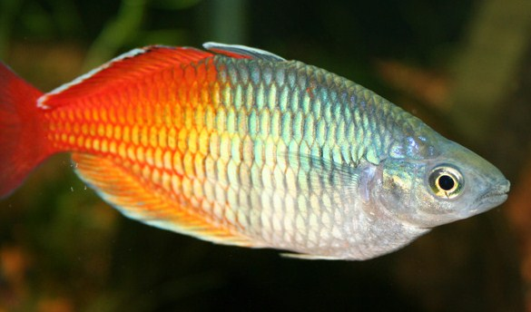
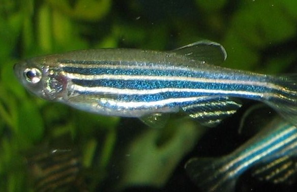
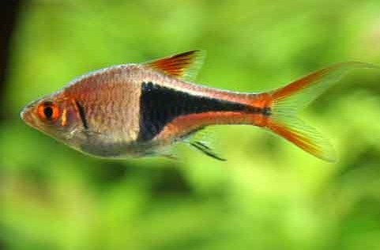
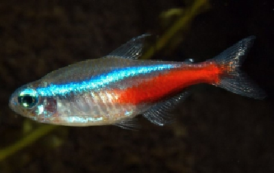
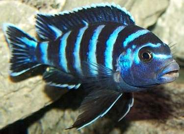
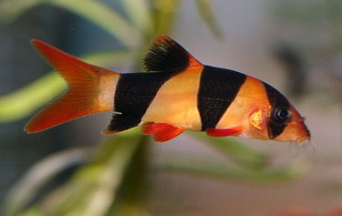

With a little basic knowledge and some good quality equipment, anybody can start their own aquarium. Some people really get ´hooked´ and end up with a depth of knowledge to match the depth of their large marine aquariums. For the complete beginner we would reccommend a fresh water environment to start with. Read on and enjoy our article on some of the do's and dont's of of setting up a new aquarium.
Do
Get the biggest aquarium size that you can manage. But remember that bigger tanks need bigger filters, lights, heaters etc. A large tank is less prone to changes in water quality and temperature.
Don´t
Place your tank beside a window with direct sunlight. This can cause algal blooms in the water, making it cloudy and while not bad in small quantities, you don't want a tank of pea-soup either !.
Do
Plan to set up your tank a couple of weeks before you stock it with the first fish. Your biological filters will need time to populate with friendly bacteria.
Don´t
Overstock the tank. Add more fish gradually over time. Remember your tank is a fragile eco-system in its own right. A few extra fish could tip the balance.
Do
Try to give your tank only small water changes at a time. Never use tap water in your aquarium until you treat it first. Never clean your filters in tap water, use water from your aquarium instead.
Don´t
Over-feed your fish. Generally speaking only feed what your fish can eat in five minutes. Remove any food remaining after this time. Unused food will break down into ammonias and nitrates.
Do
If at all possible try to include some cleaning species such as shrimp or snails, as they will help keep the tank healthy.
Don´t
Add new fish to an established aquarium if you have a quarantine tank. Keep an eye on them for any problems before putting them into your main tank.
Do
Do make sure any plants and substrates such as soil or rocks are good for your particular environment/species.
Don´t
Worry, If you keep things simple to begin with, you should have no big problems, and you will get many hours of enjoyment from the hobby.
Do
Join our club
Some good starter fish
- 
- Rainbow fish
- 
- Danios
- 
- Rasbora
- 
- Neon Tetras
- 
- Cichlids
- 
- Loaches